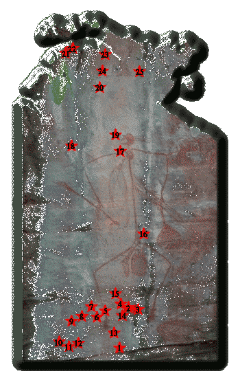

 |
1. The Ghan |
| 2. Alice Springs | |
| 3. Ghost Gums just outside Alice Springs | |
| 4. Simpsons Gap | |
| 5. Standley Chasm | |
| 6. The Finke River | |
| 7. On the way to Redbank Gorge | |
| 8. Palm Valley | |
| 9. Kings Canyon | |
| 10. The Olgas | |
| 11. Ulura, Ayers Rock | |
| 12. Looking down from Uluru | |
| 13. Road Train on the Stuart Highway | |
| 14. Grave, Telegraph Station, Alice Springs | |
| 15. Camels in the Outback | |
| 16. Devil's Marbles | |
| 17. Daly Waters Pub | |
| 18. Victoria River Crossing | |
| 19. Termite Mounds | |
| 20. Edith Falls | |
| 21. Darwin | |
| 22. Darwin Beach | |
| 23. Kakadu National Park | |
| 24. Barramundi Falls, Kakadu National Park | |
| 25. Arnhem Land |